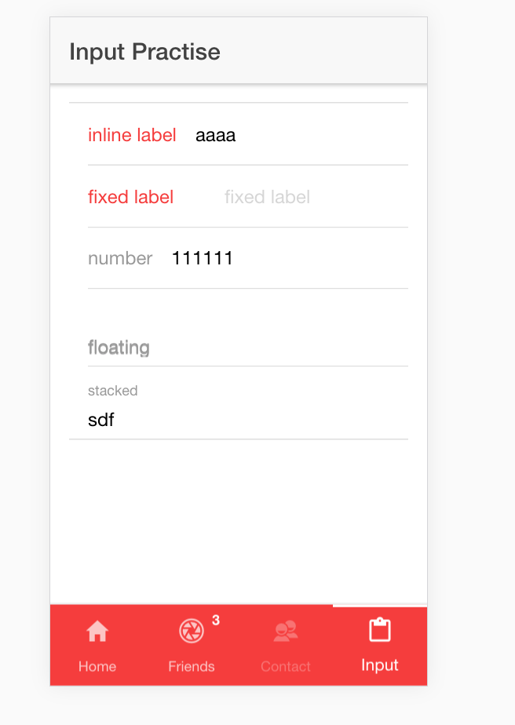

Ionic2组件之Input
ion-input is meant for text type inputs only, such as text, password, email, number, search, tel, and url. Ionic still uses an actual
<input type="text">HTML element within the component, however, with Ionic wrapping the native HTML input element it’s able to better handle the user experience and interactivity.
Similarily,<ion-textarea>should be used in place of<textarea>.
An ion-input is not used for non-text type inputs, such as a checkbox, radio, toggle, range, select, etc.
ion-input组件是作为文本输入组件，和html中的类型为text的input类似，但是它不能作为checkbox,radio,toggle,range,select这些input来使用。
此外，和html5中相同，ion-input也有text,password,email,number,search,tel和url这些类型。
相关属性
input有以下属性：
- type : HTML的input类型，有(text, password, email, number, search, tel, 或 url)
- placeholder : 同html中的用法
- clearInput : 是否在后面显示小叉
- value : input的值
- disabled ： 是否禁用
- mode : 暂时没有发现怎么用
- clearOnEdit : 暂时没有发现怎么用
用法如下:1
2
3
4
5
6
7
8
9
10
11
12
13
14
15
16<ion-content padding>
<ion-list>
<ion-item>
<ion-label color="danger">inline label</ion-label>
<ion-input color="danger" placeholder="inline label" clearOnEdit="true"></ion-input>
</ion-item>
<ion-item>
<ion-label color="danger" fixed>fixed label</ion-label>
<ion-input placeholder="fixed label" clearInput disabled="true" ></ion-input>
</ion-item>
<ion-item>
<ion-label>number</ion-label>
<ion-input type="number"></ion-input>
</ion-item>
</ion-list>
</ion-content>
浮动显示标签和固定显示标签
常用的input有三种和标签组合方式：
- 无标签，通过placeholder方式展示需要输入的内容
- floating,不输入时标签和input一行，当input输入内容后label浮到上一行
- stacked,固定浮在input上面一行
使用方式如下：1
2
3
4
5
6
7
8<ion-item>
<ion-label floating>floating</ion-label>
<ion-input placeholder="floating"></ion-input>
</ion-item>
<ion-item>
<ion-label stacked>stacked</ion-label>
<ion-input placeholder="stacked"></ion-input>
</ion-item>
focus和blur事件
利用angular2的方法，调用blur和focus方法
使用方式如下：1
<ion-input placeholder="floating" (blur)="blurInput()" (focus)="focusInput()"></ion-input>
typescript代码如下：1
2
3
4
5
6
7
8
9
10
11
12export class InputPage{
constructor(public navCtrl:NavController){
}
blurInput(){
console.log("blur");
}
focusInput(){
console.log("focus");
}
}
预览
